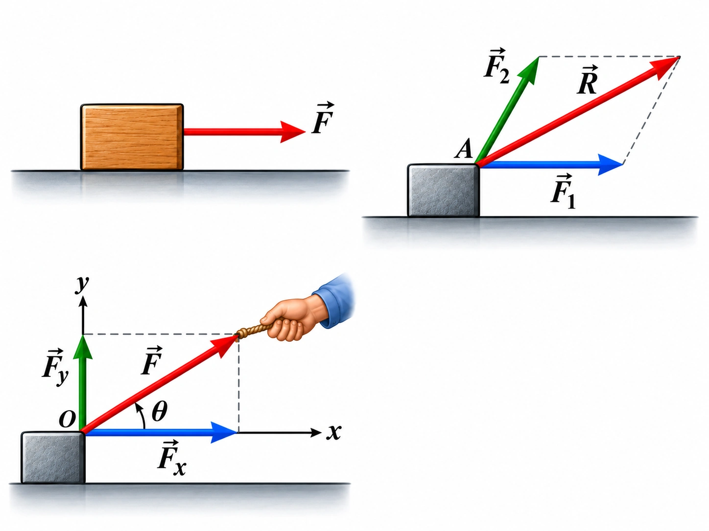
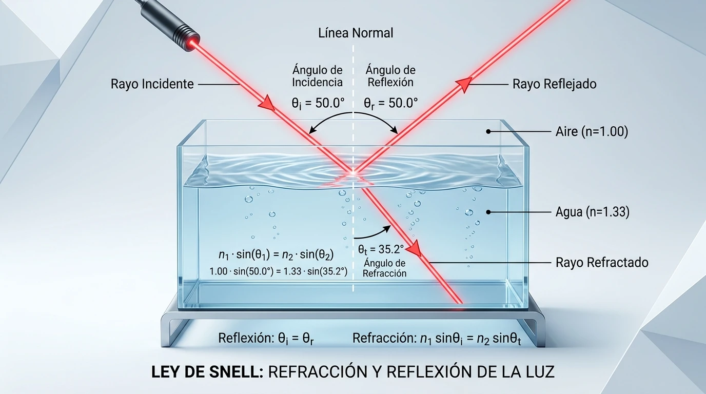

Grado 10.°Mecánica
Dinámica: las leyes de Newton
Inercia, fuerza neta y aceleración, acción y reacción, diagramas de cuerpo libre, fricción, plano inclinado y máquina de Atwood, con simuladores.
Abrir guía →Programa de Fortalecimiento de la Educación Media · PAFEM · Pereira
Guías-taller con teoría, simuladores y taller autocalificable para estudiantes de grados 10.° y 11.° y sus profesores. Elija una guía para empezar.

Inercia, fuerza neta y aceleración, acción y reacción, diagramas de cuerpo libre, fricción, plano inclinado y máquina de Atwood, con simuladores.
Abrir guía →
Reflexión y refracción, ley de Snell, reflexión interna total, espejos planos y curvos, lentes delgadas y el ojo humano, con laboratorio virtual.
Abrir guía →
Trabajo de una fuerza, potencia, teorema trabajo–energía, energía cinética y potencial, y conservación de la energía.
Abrir guía →